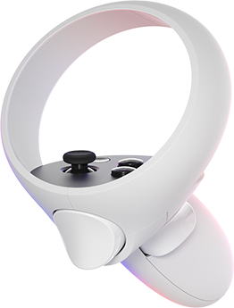
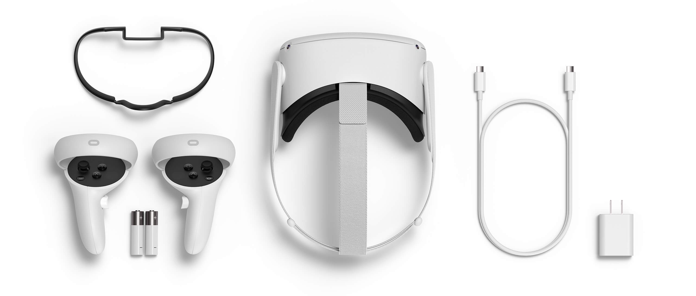

OCULUS QUEST 2
As someone who writes about virtual reality and has been stuck at home just like many people during the 2020 pandemic, I’ve gotten asked one question over and over: if virtual reality is so great and actual reality is so dangerous, why isn’t everybody turning to VR? This isn’t a totally fair framing, since VR usage has spiked by some measures. But it did expose a simple problem: I really couldn’t recommend a headset that was friendly enough for most people to buy.
Comforto
Eles são extremamente confortáveis, devido ao seu peso reduzido (500g) e devido às proteções do rosto

Comandos
Os comandos são espetaculares, os comandos encaixasse na perfeição na mão e não existe qualquer dificuldade a chegar aos botões

Cabos
Neste produto são utilizados cabos usb type C

